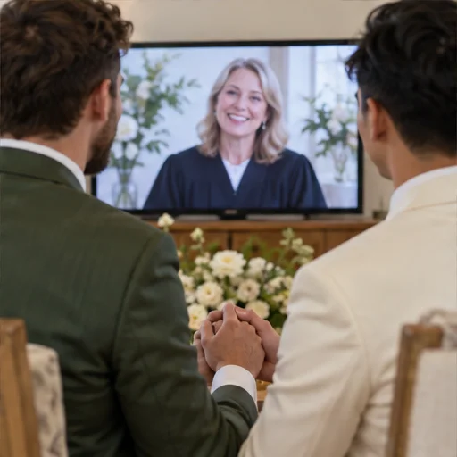

נדרים לחתונה בעברית: לכתוב מילים שנשמעות כמוכם

נדרים אישיים יכולים להיות פשוטים, קצרים ובמילים שלכם. המדריך מציע רעיונות למי שמעוניין לכתוב או לומר כמה מילים; כתיבת נדרים היא בחירה אישית ואינה חלק מההכנות הנדרשות לטקס.
מתחילים מזיכרון, לא ממשפט מושלם
אם תרצו לכתוב נדרים, אפשר להתחיל מזיכרון קטן שמספר משהו על הקשר שלכם: רגע יומיומי, החלטה משותפת או מחווה שאתם מעריכים. אין צורך למצוא פתיחה מרשימה או להראות טיוטה; גם כמה מילים פשוטות הן בחירה שלמה.
אפשר לבחור זיכרון אחד או שניים שתרגישו בנוח לשתף. סיפור קצר יכול להעלות חיוך, אך אין חובה לספר דבר אישי בפני האורחים. אם נושא מרגיש פרטי, אפשר להשאיר אותו ביניכם או לבחור מילים כלליות יותר.
בונים טקסט קצר עם קצב טבעי
למי שרוצה מבנה, אפשר לשלב פנייה לבן או בת הזוג, זיכרון, תכונה שאתם אוהבים והבטחה אחת או שתיים. ההבטחות יכולות להיות קטנות ומעשיות, כמו להקשיב או לשמור מקום לזמן משותף. אין נוסחה קבועה, ואפשר גם לדבר באופן טבעי בלי טקסט מוכן.
אם כתבתם טקסט, קראו אותו בקול ושנו כל מילה שאינה נשמעת כמוכם. הומור, ביטוי משפחתי או משפט קצר יכולים להתאים, וגם היעדר נדרים הוא בחירה לגיטימית. אם תרצו לשלב מילים אישיות, בדקו עם עורך הטקס היכן הן משתלבות.
מסכימים על האופי ושומרים על ההפתעה
אם כל אחד מכם רוצה לומר כמה מילים, אפשר לתאם מראש רק את האורך והאופי הכללי, בלי לחשוף את הנוסח. כך שניכם יודעים למה לצפות ושומרים על סגנון שמתאים לכם. אין צורך להשוות את הטקסטים או לקבוע רמת חשיפה אחידה.
אפשר לשמור את הנוסח כהפתעה או לשתף אדם קרוב, לפי העדפתכם. אם עורך הטקס מבקש לקבל את הטקסט מראש, שלחו לו אותו בדרך שיבקש. העריכה והבחירה במילים נשארות בידיכם.
מתרגלים לקריאה בטקס מצולם
אם תרצו לקרוא מהדף או ממכשיר נוסף בזמן הטקס, בחרו דרך שנוחה לכם והניחו את הטקסט בהישג יד. אין צורך לשנן או לתרגל מול מצלמה; קריאה טבעית ומתוך הדף מתאימה גם היא.
בטקס אפשר לדבר בקצב שלכם ולעצור לרגע אם מתרגשים. אם בחרתם לשלב נדרים, תאמו עם עורך הטקס מתי לומר אותם. אחרי האירוע אפשר לשמור את המילים לעצמכם או לשתף אותן.
נדבר על החתונה שלכם?
המילים האישיות הן בחירה שלכם. התחילו במשפט קצר אחד שמרגיש נכון לשניכם.
בואו נדבר בוואטסאפ